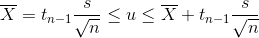

Media poblacional con varianza conocida
Ejemplo :
El ciclo medio de vida de una muestra aleatoria de 12 focos es de 2000 horas, con una desviación estándar muestral de 200
horas.
Se supone que la vida media de los focos se distribuye normalmente.
Determine los intervalos de confianza del
95% para la vida media de los focos
Ecuación 1. [Formula]. Tomado de codecogs
Resultado
Alfa = 5%
t = 2.593
Adaptado del Ejercicio 3.7 Propuesto por Walpole R., Myers R., Myers S., Keying Ye (2007). Probabilidad y Estadística para ingeniería y Ciencias (8va Edición),
Mexico D.F. : Pearson (p.131)
Fuente: Autori
Pasos de solución
-
- Lo primero que se debe hacer es transformar el intervalo de confianza al valor Ƶ,
esto se realiza transformando el porcentaje a decimales y dividiendo entre 2,
este valor obtenido se debe buscar en la tabla de áreas de la distribución normal estándar. - Aplicamos la fórmula para intervalos de confianza con varianza conocida
- Lo primero que se debe hacer es transformar el intervalo de confianza al valor Ƶ,
Conceptos utilizados
-
- Tabla de area de la distribucion normal
- formulas
Adaptado del Ejercicio 3.7 Propuesto por Walpole R., Myers R., Myers S., Keying Ye (2007). Probabilidad y Estadística para ingeniería y Ciencias (8va Edición),
Mexico D.F. : Pearson (p.735)Fuente: Autori
Media poblacional con varianza desconocida
Ejemplo :
Se desea construir un intervalo de confianza del 90% para la estatura media de los habitantes de una población.
Datos: 175,177,180,165,170,170,181,169,165,190,170,171
Resultado
169.776 < µ < 170.390
Fuente: Autori
Fuente: Autori
Pasos de solución
-
- Se cuenta el número de datos, los cuales equivalen a : n
- Se obtiene la media:
- Se obtiene la desviación muestral
- Hallar alfa
- Hallar en la tabla de distribución de tstudent el valor T
- Usar la fórmula de estimación por intervalos
X = 173.5
S = 7.3
a = 0.1
T (0.05, 11) = 1.7
Respuesta:
169.776 < µ < 170.390
Conceptos utilizados
-
-
Formula de la media
- Formula de desviación muestral
- Como 90% es el intervalo de confianza, alfa es lo que falta para llegar en valor numérico a 1
- Formula de distribucion de tstudent
- Formula de estimación por intervalo 
Ecuación 2. [Formula]. Tomado de codecogs
Ecuación 3. [Formula]. Recuperado de codecogs
Ecuación 4. [Formula]. Tomado de codecogs
Ecuación 5. [Formula]. Tomado de codecogs
-
Formula de la media
Determinacion del tamaño de la muestra
Ejemplo :
El gerente de una fábrica de camisas desea estimar el promedio de las camisas vendidas mensualmente de talla m,
con un error que no exceda 2 camisas fabricadas, y un nivel de confianza deseado de 95%.
¿Cuántas camisas deberá vender si se sabe que la desviación estándar es de 1650?
Adaptado de Martínez C. (2012). Estadística y muestreo (10ma Edición), Bogotá D.C.: ECOE EDICIONES (p.303)
Resultado
n = 2.6
Fuente: Autori


Conceptos utilizados
- Es importante comprender el ejercicio, los datos dados y lo que se pide, para saber cómo aplicar la formula.
- Una vez se identificaron los valores se reemplazan en la formula.
-
Se opera matemáticamente y si en el resultado, n no es un número entero se redondea al número superior.
Siendo 2.615 el número total de camisas que se deben fabricar mensualmente para lograr el nivel de confianza deseado de 95%

Ecuación 8. [Formula]. Recuperado de codecogs
Proporción poblacional
Ejemplo :
En una muestra de 400 pilas tipo b, fabricadas por Energice, se encontraron 20 pilas defectuosas.
Encontrar el intervalo de confianza para las pilas defectuosas tipo b, utilizar un nivel de confianza del 95%,
y también determinar la proporción de pilas defectuosas
Datos
400 pilas = n (Tamaño de la muestra)
x = 20 número de pilas defectuosas
Proporción de pilas defectuosas
Proporción de pilas bien fabricadas
q = 1 - p
= 1 - 0.05
= 95
Nivel de confianza = 0.95
Fuente:Autor
Intervalo de confianza:
Superior= 7.1%
Inferior= 2.8%
Resultado
Por lo tanto, se estima que la proporción de pilas defectuosas se encuentra entre el 7.13% y el 2.86%, con un 95% de confianza
Fuente: Autori
Pasos de Solución
- Hallar la proporción de pilas defectuosas
- Hallar la Proporción de pilas bien fabricadas
- Hallar el nivel de confianza
- tilizar la campana de gauss para hallar nuestra área y normalizar el valor
- Calcular el error poblacional
- Utilizar la fórmula para obtener el intervalo de confianza de una proporción poblacional
- Interpretar los datos que nos da la fórmula para hallar el resultado
Conceptos utilizados
- para ello aplicamos la fórmula
-
Para ello aplicamos la fórmula
q = 1 - p -
Para ello usamos la fórmula:
1 - α -
Para esto utilizamos la fórmula
Ecuación 8 [Formula]. Recuperado de codecogs